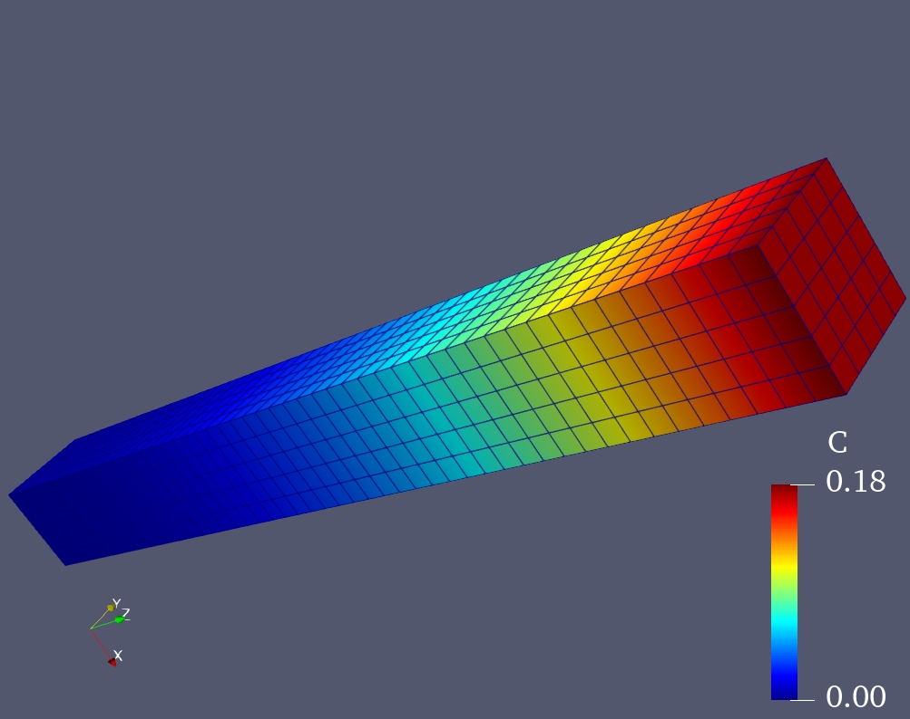

Introduction
In this step, we will try to solve the linear diffusion problem.
The diffusion equation
The problem we want to solve is the diffusion equation that reads as follows: $$ \begin{equation} \frac{\partial c}{\partial t}=\nabla\cdot(D\nabla c) \label{eq:diffusion-eq} \tag{1} \end{equation} $$ where \(c\) denotes the concentration of the species. \(D\) is the diffusion coefficient
The related boundary conditions can be read as: $$ \begin{equation} -D\nabla c\cdot\vec{n}=-0.5\qquad\mathrm{on}\quad\partial\Omega_{N} \label{eq:flux} \tag{2} \end{equation} $$ where the flux (Neumann) boundary condition is assumed in Eq.\(\eqref{eq:flux}\).
Define the mesh
For our calculation, we use a cubic domain here, and then the [mesh] block can be given as:
[mesh]
type=asfem
dim=3
xmax=1.0
ymax=1.0
zmax=10.0
nx=5
ny=5
nz=50
meshtype=hex8
[end]
where a \(1\times1\times10\) mesh is defined.
Define the DoFs
The DoFs used in this step is the concentration, namely \(c\). Then the [dofs] block can be read as:
[dofs]
name=c
[end]
Element for the diffusion equation
The model in Eq.\(\eqref{eq:diffusion-eq}\) can be applied in the following lines
[elmts]
[mydiffusion]
type=diffusion
dofs=c
mate=mymate
[end]
[end]
where type=diffusion option specifies the element we want to use for the diffusion problem. Moreover, we will use the constant diffusivity material property, therefore, the related material definition will be given in mymate block.
Constant diffusivity material property
Via the following lines in your [mates] block, the constant diffusivity \(D\) can be easily defined:
[mates]
[mymate]
type=constdiffusion
params=1.0e1
[end]
[end]
where type=constdiffusion specifies constant diffusivity material type. params= defines the diffusivity \(D\) (\(D=10.0\)).
Boundary conditions
The boundary conditions, as mentioned in Eq.\(\eqref{eq:flux}\), can be applied via the [bcs] block. In our case, only the flux boundary (Neumann) condition needs to be considered:
[bcs]
[flux]
type=neumann
dof=c
value=-0.5
boundary=front
[end]
[end]
where we apply a constant flux to the front surface of our cubic domain.
Transient analysis
Again, we need a [job] block to start the FEM calculation, which can be given as follows:
[job]
type=transient
debug=dep
[end]
Timestepping
Wait for a minute, where are the settings for the transient analysis, for instance the initial \(\Delta_t\) and the final time? Noooo worries, the [timestepping] block can help you to set the different time stepping method as well as the \(\Delta_t\), \(T_{\mathrm{final}}\) stuffs. The layout of this block looks like below:
[timestepping]
type=be
dt=1.0e-3
time=1.0e0
[end]
where type=be specifies the Backward-Euler (be) method for implicit time integration. It should be mentioned that, AsFem only support the implicit method, the explicit method like Forward-Euler (fe) is not supported! dt=1.0e-3 defines that the initial \(\Delta_{t}\) is \(10^{-3}\), while time=1.0e0 means the final time is 1.0.
Done!
Run it in AsFem
Now, let's try your fourth example in AsFem. You can create a new text file and name it as step3.i or whatever you like. Then copy the following lines into your input file:
[mesh]
type=asfem
dim=3
xmax=1.0
ymax=1.0
zmax=10.0
nx=5
ny=5
nz=50
meshtype=hex8
[end]
[dofs]
name=c
[end]
[elmts]
[mydiffusion]
type=diffusion
dofs=c
mate=mymate
[end]
[end]
[mates]
[mymate]
type=constdiffusion
params=1.0e1
[end]
[end]
[bcs]
[flux]
type=neumann
dof=c
value=-0.5
boundary=front
[end]
[end]
[timestepping]
type=be
dt=1.0e-3
time=1.0e0
[end]
[job]
type=transient
debug=dep
[end]
You can also find the complete input file in examples/tutorial/step4.i.
If everything goes well, you can see the following image in your Paraview: 
The outputs
You may see the following outputs from your terminal:
***-----------------------------------------------------------------------***
*** SNES solver:iters= 0,|R|= 1.4306e-02,|dU|= 3.0700e+00,dt=1.00e-03 ***
*** SNES solver:iters= 1,|R|= 1.3957e-15,|dU|= 2.4301e-03,dt=1.00e-03 ***
*** Time step= 999, time= 9.99000e-01, dt= 1.00000e-03 ***
*** Write result to step4-00000999.vtu ***
***-----------------------------------------------------------------------***
*** SNES solver:iters= 0,|R|= 1.4303e-02,|dU|= 3.0723e+00,dt=1.00e-03 ***
*** SNES solver:iters= 1,|R|= 1.3530e-15,|dU|= 2.4296e-03,dt=1.00e-03 ***
*** Time step= 1000, time= 1.00000e+00, dt= 1.00000e-03 ***
*** Write result to step4-00001000.vtu ***
***-----------------------------------------------------------------------***
*** Time step= -1, time= 1.00000e+00, dt= 1.00000e-03 ***
*** Write result to step4-000000-1.vtu ***
***-----------------------------------------------------------------------***
One can see that, when the current time \(t\) reaches \(1.0\), the related output file name is step4-00001000.vtu (for the 1000-th step). Moreover, AsFem will also give the final output step4-000000-1.vtu, which could be very helpful when \(t_{\mathrm{old}}+\Delta_{t}>T_{\mathrm{final}}\).